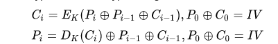

CBC
Ehrsam, Meyer, Smith and Tuchman invented the Cipher Block Chaining (CBC) mode of operation in 1976.[11] In CBC mode, each block of plaintext is XORed with the previous ciphertext block before being encrypted. This way, each ciphertext block depends on all plaintext blocks processed up to that point. To make each message unique, an initialization vector must be used in the first block.
If the first block has index 1, the mathematical formula for CBC encryption is
C i = E K ( P i ⊕ C i − 1 ) , {\displaystyle C_{i}=E_{K}(P_{i}\oplus C_{i-1}),} {\displaystyle C_{i}=E_{K}(P_{i}\oplus C_{i-1}),}
C 0 = I V {\displaystyle C_{0}=IV} {\displaystyle C_{0}=IV}
while the mathematical formula for CBC decryption is
P i = D K ( C i ) ⊕ C i − 1 , {\displaystyle P_{i}=D_{K}(C_{i})\oplus C_{i-1},} {\displaystyle P_{i}=D_{K}(C_{i})\oplus C_{i-1},}
C 0 = I V . {\displaystyle C_{0}=IV.} {\displaystyle C_{0}=IV.}
CBC has been the most commonly used mode of operation. Its main drawbacks are that encryption is sequential (i.e., it cannot be parallelized), and that the message must be padded to a multiple of the cipher block size. One way to handle this last issue is through the method known as ciphertext stealing. Note that a one-bit change in a plaintext or initialization vector (IV) affects all following ciphertext blocks.
Decrypting with the incorrect IV causes the first block of plaintext to be corrupt but subsequent plaintext blocks will be correct. This is because each block is XORed with the ciphertext of the previous block, not the plaintext, so one does not need to decrypt the previous block before using it as the IV for the decryption of the current one. This means that a plaintext block can be recovered from two adjacent blocks of ciphertext. As a consequence, decryption can be parallelized. Note that a one-bit change to the ciphertext causes complete corruption of the corresponding block of plaintext, and inverts the corresponding bit in the following block of plaintext, but the rest of the blocks remain intact. This peculiarity is exploited in different padding oracle attacks, such as POODLE.
Explicit Initialization Vectors[12] takes advantage of this property by prepending a single random block to the plaintext. Encryption is done as normal, except the IV does not need to be communicated to the decryption routine. Whatever IV decryption uses, only the random block is "corrupted". It can be safely discarded and the rest of the decryption is the original plaintext.
Propagating Cipher Block ChainingThe Propagating Cipher Block Chaining[13] or plaintext cipher-block chaining[14] mode was designed to cause small changes in the ciphertext to propagate indefinitely when decrypting, as well as when encrypting. In PCBC mode, each block of plaintext is XORed with both the previous plaintext block and the previous ciphertext block before being encrypted. As with CBC mode, an initialization vector is used in the first block.
Encryption and decryption algorithms are as follows:

PCBC is used in Kerberos v4 and WASTE, most notably, but otherwise is not common. On a message encrypted in PCBC mode, if two adjacent ciphertext blocks are exchanged, this does not affect the decryption of subsequent blocks.[15] For this reason, PCBC is not used in Kerberos v5.